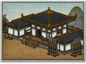

Enables
- Buildings: 
- Units:


Basic Building Statistics (can be modified by difficulty level, arts, skills, traits and retainers)
- Cost: 765
Description
There is wisdom in picking up a weapon before a battle.
The training grounds have space enough to allow the training of naginata attendants. The naginata is a long weapon, and it is advisable to stand well away from any trainee swinging it with gusto! The weapon itself can be used as a spear or as a cutting blade, but it requires considerable strength as well as skill. The origins of the naginata are obscured by time. It may have developed from an agricultural implement like the English mediaeval bill developed from the farming billhook but, given its association with the samurai this seems unlikely. Samurai were gentlemen, not farmers. It is more likely that the weapon is a Japanese reinterpretation and refinement of a traditional Chinese glaive, the "yan yue dao", which translates as the rather poetic term "reclining moon blade". This does, however, quite clearly describe the shape of the business end of the weapon. The Japanese naginata's blade is slightly straighter and closer to a sword in overall form.